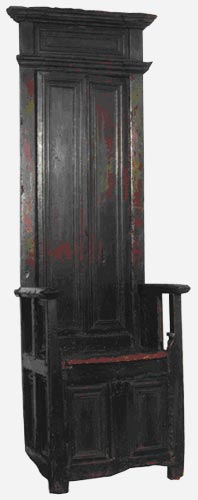

LE RETOUR DU FAUTEUIL DE MOLIERE � P�zenas
On conna�t le fauteuil dans lequel Moli�re interpr�ta � le Malade Imaginaire � quelques heures avant sa mort ; il est aujourd'hui pr�sent� au Foyer de la Com�die Fran�aise, � Paris. Le souvenir du fauteuil de Moli�re � P�zenas, expos� au public pour la derni�re fois lors des f�tes du tricentenaire de 1922, s'est quelque peu estomp�, sauf � P�zenas, o� il avait �t� de toutes les f�tes.

Et pourtant, il est l'un des rares t�moins de la vie itin�rante que Moli�re et sa troupe entreprirent � travers le pays, apr�s l'�chec de � l' Illustre Th��tre �, avant de trouver la protection du Roi Soleil.Pendant un si�cle et demi ce fauteuil, qui se trouvait primitivement dans la boutique du barbier Gely, fut pieusement conserv� dans la m�me famille et suivit ses d�m�nagements successifs, tandis que P�zenas d�plorait son �loignement.
Fid�le � une promesse ancienne, ses d�tenteurs le proposent aujourd'hui � sa ville d'origine, pour qu'il trouve place dans son Mus�e, � l'intention du plus large public.
Le montant n�cessaire � l'acquisition et la pr�sentation de ce fauteuil est de 100.000 �.
Appel a �t� fait � la Direction des Mus�es de France, au Conseil R�gional Languedoc-Roussillon, au Conseil G�n�ral de l'H�rault, � l'Agglom�ration H�rault- M�diterran�e, � la Ville de P�zenas et aux communes environnantes. L'association des Amis de P�zenas lance cette souscription pour un montant de 20.000 euros et s'engage � faire figurer les g�n�reux souscripteurs sur un livre d'or.
La Fondation du Patrimoine pourra nous allouer une aide financi�re. Cette aide est conditionn�e par l'organisation d'une souscription qui doit permettre aux habitants de P�zenas et � tous nos amis de prolonger encore les financements de cet achat. Nous avons donc l'honneur de vous faire part de cette proposition de participer � notre souscription qui doit r�unir 5% minimum du montant de l'acquisition.
Si vous �tes sensibles � la sauvegarde du patrimoine de P�zenas et si vous d�sirez participer � notre action, nous vous remercions de bien vouloir remplir le bon de souscription au verso de ce document et l'adresser � l'Association des Amis de P�zenas ou � la Fondation du Patrimoine accompagn� de votre ch�que libell� � l'ordre de FONDATION DU PATRIMOINE � FAUTEUIL DE MOLIERE.
Pour votre don vous b�n�ficiez d'une r�duction d'imp�t (voir d�tail sur le fichier PDF), un re�u fiscal vous sera adress� par la Fondation du Patrimoine.